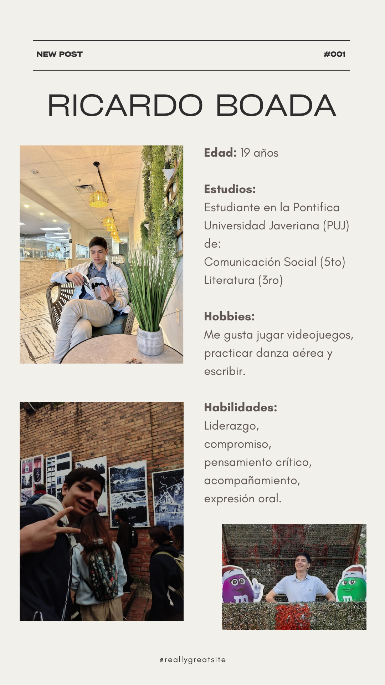

Limpieza de datos: Ricardo
Limpieza de datos: Gustavo
Excel


Ricardo
Gustavo


Ricardo
Gustavo


Nissan
En el siguiente gráfico se puede ver cómo el Vosviewer divide por defecto en 8 grupos el conjunto de datos, más 10 nodos solitarios. (La imagen utilizada arriba hace parte de un trabajo realizado en clase del cual esta es el único registro colectivo).
Davivienda
Empresarial Mujeres
A la hora de medir la relevancia de los nodos, es evidente que cada grupo tiene un nodo relevante, siendo USAID_Colombia para el rojo, VerdeGiz_Co para el azul, MarRodriguezR2 para el verde y ChangoCabalH para el amarillo. Claramente el nodo más relevante de la red es MarRodriguezR2 con la módica suma de cinco conexiones.